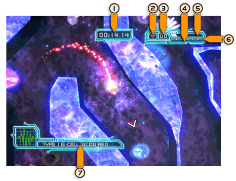

La Pantalla de Alertas (Heads Up Display) te ofrece lecturas de varios elementos importantes para mantener a Konki con vida y cumpliendo sus labores. El HUD te muestra:

- Level Timer (Cronómetro de Nivel) – Mantén un ojo sobre este cronómetro ya que frecuentemente es la clave para completar el objetivo de un nivel o ganar una partida de jugadores múltiples.
- Indicator Box (Caja Indicadora) – Dependiendo del nivel, verás aquí la nave de Konki o el tipo de objeto que debes salvaguardar. En modo de jugadores múltiples, éstos pueden ver a cuál Pantalla de Alertas (HUD) prestarle atención ya que el ícono tiene el mismo color que sus naves.
- Counter (Planilla) – Mantiene un registro de la cantidad de elementos de mejora que has colectado para cumplir con el objetivo actual.
- Upgrade Meter (Medidor de Optimizaciones) – ¿Trabajando en pos de una nueva optimización? Fíjate en este medidor para saber qué tan lejos necesitas ir.
- Energy Meter (Medidor de Células) – Te muestra cuanta energía restante tienes. Ésta aumenta a medida que colectas células de energía, mientras que disminuye cuando sufres un daño.
- Upgrade Tracker (Indicador de Optimizaciones) – ¿Preguntándote cuántas optimizaciones de naves tienes? El número de cajas naranjas aquí determina las optimizaciones logradas.
- Message Box (Caja de Mensajes) – Las metas y objetivos importantes del nivel se muestran aquí.